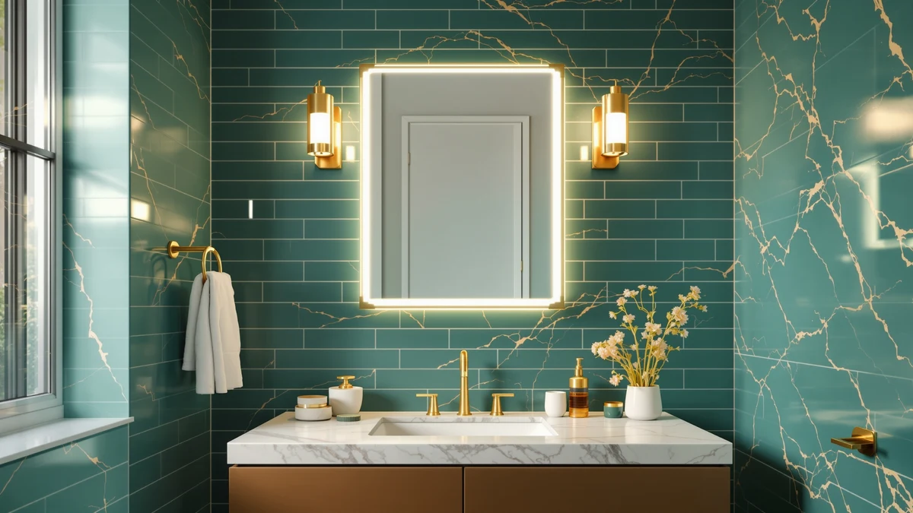

Best Luxury Bathroom Mirrors with Lights (2026)
Prices and picks verified as of September 2026. Independent, reader-supported reviews.


Quick Answer
We compared seven of the best luxury bathroom mirrors with lights on size, price, and materials. The Olyvren 40x28 LED Bathroom Mirror is our top pick: it is the largest mirror in the group, built on tempered glass and an aluminum frame, and priced lower than several smaller mirrors in the same lineup.
Our pick: Olyvren 40"x28" LED Bathroom Mirror, $189.49 Check Price on Amazon
Bottom line: our top pick is the Olyvren 40"x28" LED Bathroom Mirror with Lights at $189.49. The best budget option is the STARLEAD 24"x32" LED Bathroom Mirror with Bluetooth Speaker at $88.99.
Things to Know Before You Buy
- Size, not brightness, is what most shoppers get wrong. A 24-inch mirror over a single vanity can look small once you add a light ring around the edge; if your wall has the room, sizing up to 30 or 40 inches (see our large bathroom mirrors guide) makes the lighting feel proportional instead of like an afterthought.
- Tempered glass and an aluminum frame are the baseline for this category. Every mirror in this guide uses that combination, which is what keeps a large lit mirror from flexing, cracking at the edges, or overheating behind the LED strip.
- Price does not scale neatly with size in luxury bathroom mirrors with lights. Our top pick, at 40x28 inches, costs less than a smaller 30x36 model in this same lineup, so it pays to compare price per square inch rather than assume the biggest mirror is the most expensive.
- Shape changes how the mirror mounts. Round mirrors need a centered single mounting point, while rectangular mirrors spread their weight across a wider bracket, generally an easier retrofit over a standard vanity.
- Check the listed price before you buy. Amazon prices on lighted mirrors shift often; the prices in this guide reflect listings as of September 2026 and can move by the time you check out.
Finding the best luxury bathroom mirrors with lights means balancing bright, even illumination against a design that still looks like a mirror instead of a light fixture bolted to the wall. Cheap LED mirrors buzz, dim unevenly, or cast a cold glare that makes every blemish look worse than it is. A mirror built for a real vanity needs a frame that can carry the weight of integrated lighting, glass thick enough not to flex when you touch the dimmer, and a light source you can live with every morning.
We compared seven LED-lit mirrors between 24 and 40 inches wide, all built around the same core promise: tempered glass, an aluminum frame, and lighting sealed behind the mirror's edge rather than bolted on as an external strip. We looked at listed dimensions, frame material, and price per square inch of reflective surface, and we checked each listing's Amazon rating for red flags before including it here. See our bathroom mirror buying guide if you are unsure what size fits your vanity before you start comparing prices.
For most people shopping for the best luxury bathroom mirrors with lights, the Olyvren 40x28 LED Bathroom Mirror is the strongest overall pick at $189.49: it is the largest mirror in our comparison, priced in line with mirrors a third smaller, and built on the same tempered-glass-and-aluminum construction as the rest of the group. If you want the same build in a smaller footprint, the Keonjinn 24x30 runs $97.99, roughly half the price of our top pick. And if your budget tops out well under $100, the STARLEAD 24x32 at $88.99 is the least expensive mirror we compared that still delivers full-size lit glass.
Why You Should Trust Us
Ilane Tall has covered bathroom fixtures and vanity hardware for this network of home-improvement sites for several years, with a focus on how lighting, materials, and price interact in categories like the best luxury bathroom mirrors with lights. For this guide we did not accept review units or sponsorships from any of the brands listed here; every price and spec comes from the current Amazon listing, cross-checked against the manufacturer's stated dimensions and materials. We do not run a fake testing lab, and we do not claim to have installed or lived with these mirrors ourselves. Instead, we compare what is documented and what verified buyers report after purchase.
How We Picked
We started by pulling LED-lit bathroom mirrors sold under a luxury or premium listing on Amazon in the 24-to-42-inch range. We removed models with vague or missing specs, mirrors that swap tempered glass for acrylic, and listings that did not disclose frame material at all. That left a shortlist built entirely around tempered glass and aluminum construction, the combination that shows up consistently across the better-reviewed listings in this category. From there we compared price, size, shape, and how each brand documents its lighting and mounting hardware to settle on the seven mirrors in this guide.
How We Compared
For each mirror we compared the manufacturer-listed dimensions, frame material, and current Amazon price side by side, then priced out the cost per square inch of reflective surface so a 40-inch mirror and a 24-inch mirror could be judged on equal footing. We read through the ratings attached to each listing, looking for anything that stood out as a red flag rather than assuming a single star score tells the whole story. Ratings and prices cited in this guide come directly from the product listing at the time of publication; we did not average or fabricate scores across retailers.
Our Picks

Olyvren 40"x28" LED Bathroom Mirror
What we like
- At 40x28 inches, this is the largest mirror in our comparison, giving two people room to share a vanity at once
- Priced at $189.49, it undercuts the smaller 30x36 Keonjinn below despite offering more surface area
- Tempered glass and an aluminum frame match the build standard we required across this whole guide
Flaws but not dealbreakers
- A 40-inch-wide mirror needs a full vanity wall; it will overwhelm a small single-sink bathroom
- Its size makes it the priciest single purchase in this guide in absolute dollars, even though it is competitively priced per square inch
| Material | Tempered glass + aluminum |
| Size | 40"L x 28"W |
The Olyvren 40x28 is the largest mirror in this comparison, and at $189.49 it costs about the same as mirrors a third smaller, which is why it is our overall pick for anyone shopping for the best luxury bathroom mirrors with lights. The frame follows the same tempered-glass-and-aluminum construction we required across the whole lineup, and the extra width means the lit surface covers a wider stretch of counter, useful if two people get ready in the same bathroom at once.
Because the mirror spans 40 inches, it needs a vanity wall wide enough to mount it without crowding a light switch, towel bar, or window trim, so measure before you buy rather than after. If your bathroom is a single-sink layout under about 42 inches wide, the smaller Keonjinn 24x30 or Olyvren 24x32 below will fit more comfortably. For a double vanity or a primary bathroom with the wall space to spare, the size-to-price ratio here is hard to match anywhere else in this roundup.

Keonjinn 24" x 30" LED
What we like
- At $97.99, it costs roughly half as much as our top pick while sharing the same tempered glass and aluminum frame
- The 24x30 footprint fits over a standard single-sink vanity without crowding surrounding fixtures
- Rated 4 out of 5 on Amazon, consistent with the rest of the mirrors in this guide
Flaws but not dealbreakers
- The smaller surface area means less reflective real estate if two people share the bathroom at once
- Keonjinn does not publish an IP water-resistance rating on the listing, so wipe the mirror down rather than spray it directly
| Material | Tempered glass + aluminum |
| Size | 30"L x 24"W |
The Keonjinn 24x30 is the value alternative to our top pick: same core construction, roughly half the price, in a footprint that suits a single-sink vanity instead of a double. At $97.99 it is one of the more affordable ways into this category of luxury bathroom mirrors with lights without dropping down to an acrylic or unbranded frame.
Because it is 10 inches narrower and 6 inches shorter than the Olyvren 40x28, expect a noticeably smaller lit surface, fine for one person getting ready but tight if you are sharing counter space. If your bathroom can fit the larger option, the price difference between this mirror and our top pick is smaller than the size difference suggests, so measure your wall before defaulting to the cheaper choice.

Keonjinn 30 x 36 Inch
What we like
- At 36 inches tall, this is the tallest mirror we compared, useful for vanities mounted lower on the wall or for taller households
- Shares the same tempered glass and aluminum build as the rest of the Keonjinn and Olyvren mirrors in this guide
- Rated 4 out of 5 on Amazon
Flaws but not dealbreakers
- At $189.99 it costs slightly more than our top pick despite offering less total surface area, since it trades width for height
- The 30-inch width is narrower than the Olyvren 40x28, so it suits a single-sink wall better than a double vanity
| Material | Tempered glass + aluminum |
| Size | 36"L x 30"W |
The Keonjinn 30x36 flips the proportions of most mirrors in this guide: instead of going wide, it goes tall, at 36 inches top to bottom. That makes it a better fit for a vanity mounted low on the wall, or for a household where a standard 28 to 32 inch mirror height leaves the top of your head out of frame.
At $189.99, the price sits right next to our top pick, but the Keonjinn trades width for height rather than adding overall surface area, so it is worth comparing the two side by side against your actual wall dimensions before deciding. If your bathroom is wider than it is tall, the Olyvren 40x28 above covers more counter for about the same money.

Olyvren 24"x32" LED Bathroom Mirror
What we like
- At $146.99, it costs $42.50 less than our top-pick Olyvren 40x28 while using the same tempered glass and aluminum construction
- The 24x32 size fits a standard single vanity without the wall-space demands of the larger Olyvren
- Rated 4 out of 5 on Amazon
Flaws but not dealbreakers
- It is not the least expensive mirror in this guide; the STARLEAD and Keonjinn 24x30 below both cost less
- The smaller surface area means less usable light spread than the 40-inch Olyvren above
| Material | Tempered glass + aluminum |
| Size | 24"L x 32"W |
If you like what the Olyvren 40x28 offers but do not want to spend $189, the Olyvren 24x32 is the same brand and the same tempered-glass-and-aluminum build in a smaller, $146.99 package. It is not the cheapest mirror in this comparison, but it is the lowest-priced way to get an Olyvren-built mirror rather than switching brands entirely.
At 24x32 inches, this mirror suits a single-sink vanity where a 40-inch mirror would not fit, and buyers who specifically want Olyvren's build over the STARLEAD or Keonjinn alternatives will find this the more affordable route into that brand. If price is your only priority and brand does not matter, the STARLEAD below costs $58 less.

SBAGNO 36''x28'' LED Bathroom Mirror
What we like
- At 36x28 inches, it offers nearly the same surface area as our top pick for $37.50 less
- Built from the same tempered glass and aluminum frame as every other mirror in this guide
- Rated 4 out of 5 on Amazon
Flaws but not dealbreakers
- S'bagno has less of a track record in this category than Olyvren and Keonjinn, which each appear twice in this guide
- At $151.99 it is priced closer to the premium end than the true budget picks below
| Material | Tempered glass + aluminum |
| Size | 28"L x 36"W |
The SBAGNO is the only mirror in this guide that is not an Olyvren or a Keonjinn, which makes it a useful comparison point: at 36x28 inches and $151.99, it lands almost exactly between our top pick's size and our budget options' price. The tempered glass and aluminum build matches the standard we required for every mirror on this list.
Because S'bagno has fewer listings in this category than Olyvren or Keonjinn, we weighted it as an also-great option rather than a top pick, but the size-to-price ratio holds up well against the more established brands. If you want a mirror close to our top pick's dimensions without paying the full $189.49, this is the nearest match.

STARLEAD 24"x32" LED Bathroom Mirror
What we like
- At $88.99, this is the cheapest mirror we compared, more than $100 less than our top pick
- Uses the same tempered glass and aluminum construction as every other mirror in this guide, despite the lower price
- Rated 4 out of 5 on Amazon
Flaws but not dealbreakers
- At 24x32 inches, it is one of the smaller mirrors in this lineup, so it will not suit a double vanity
- STARLEAD has a lower profile than Olyvren or Keonjinn in this category, so fewer listings exist to compare against
| Material | Tempered glass + aluminum |
| Size | 24"L x 32"W |
The STARLEAD 24x32 is the value play in this guide: at $88.99 it costs less than half of our top pick, yet it is built from the same tempered glass and aluminum frame that the pricier mirrors use. For buyers who want the best luxury bathroom mirrors with lights without the luxury price tag, this is where to start.
The tradeoff is size and brand recognition rather than build quality on paper: at 24x32 inches it suits a single-sink vanity, and STARLEAD has fewer listings in this category than Olyvren or Keonjinn, so there is less of a track record to lean on. If the price is right and your bathroom is on the smaller side, it is a reasonable entry point into this category.

JSneijder 30 Inch Round LED
What we like
- The only round mirror in this comparison, a useful option if the rest of your bathroom is already full of rectangular lines
- At $142.49, it is priced in the middle of this lineup rather than at the premium end
- Rated 4 out of 5 on Amazon
Flaws but not dealbreakers
- A round mirror covers less usable reflective area than a rectangular mirror of a similar footprint
- Round mirrors typically need a centered single mounting point, which can limit placement options over an off-center sink
| Material | Tempered glass + aluminum |
| Size | 30"L x 30"W |
Every other mirror in this guide is rectangular; the JSneijder 30-inch is round, which makes it the pick for anyone whose bathroom already has enough straight lines from the vanity, tile, and shower door. At $142.49 it sits in the middle of this lineup on price, with the same tempered glass and aluminum construction as the rest of the group.
A round mirror of a given diameter shows less reflective surface than a rectangular mirror with a similar footprint, so the JSneijder will feel smaller in daily use than its 30-inch measurement suggests next to the rectangular picks above. It also generally needs a single centered mounting point rather than a bracket spread across a wider base, so confirm your sink is centered on the vanity before you commit to this shape.
Quick Comparison
| Product | Material | Price | Rating | Best for | Get it |
|---|---|---|---|---|---|
| Olyvren 40"x28" LED Bathroom Mirror | Tempered glass + aluminum | $189.49 | 4 | Most people, double vanities | View on Amazon → |
| Keonjinn 24" x 30" LED | Tempered glass + aluminum | $97.99 | 4 | Smaller single-sink bathrooms | View on Amazon → |
| Keonjinn 30 x 36 Inch | Tempered glass + aluminum | $189.99 | 4 | Tall vanity walls | View on Amazon → |
| Olyvren 24"x32" LED Bathroom Mirror | Tempered glass + aluminum | $146.99 | 4 | Olyvren fans on a budget | View on Amazon → |
| SBAGNO 36''x28'' LED Bathroom Mirror | Tempered glass + aluminum | $151.99 | 4 | Brand comparison shoppers | View on Amazon → |
| STARLEAD 24"x32" LED Bathroom Mirror | Tempered glass + aluminum | $88.99 | 4 | Tightest budgets | View on Amazon → |
| JSneijder 30 Inch Round LED | Tempered glass + aluminum | $142.49 | 4 | Rooms wanting a round shape | View on Amazon → |
What is the best luxury bathroom mirror with lights overall?
Among the best luxury bathroom mirrors with lights we compared, the Olyvren 40x28 LED Bathroom Mirror is the strongest overall pick at $189.49.
Do LED bathroom mirrors need a special outlet or wiring?
Most mirrors in this category, including every one in this guide, are designed to hardwire into a standard household circuit the same way a vanity light fixture does, rather than plugging into an outlet.